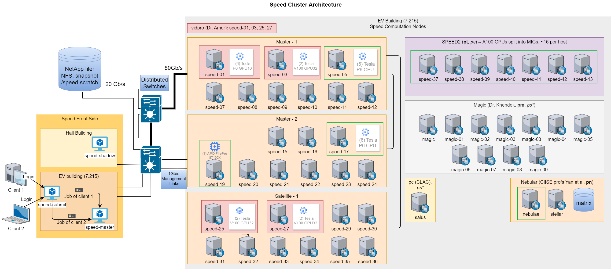

This document serves as a quick start guide to using the Gina Cody School of Engineering and Computer Science (GCS ENCS) compute server farm, known as “Speed.” Managed by the HPC/NAG group of the Academic Information Technology Services (AITS) at GCS, Concordia University, Montreal, Canada.
This document contains basic information required to use “Speed”, along with tips, tricks, examples,
and references to projects and papers that have used Speed. User contributions of sample jobs and/or
references are welcome.
Note: On October 20, 2023, we completed the migration to SLURM from Grid Engine (UGE/AGE) as our job scheduler. This manual has been updated to use SLURM’s syntax and commands. If you are a long-time GE user, refer to Appendix A.2 for key highlights needed to translate your GE jobs to SLURM as well as environment changes. These changes are also elaborated throughout this document and our examples.
If you wish to cite this work in your acknowledgements, you can use our general DOI found on our GitHub page https://dx.doi.org/10.5281/zenodo.5683642 or a specific version of the manual and scripts from that link individually. You can also use the “cite this repository” feature of GitHub.
Public GitHub page where the manual and sample job scripts are maintained at
https://github.com/NAG-DevOps/speed-hpc
Speed Manual:
Speed is supported by:
We receive support from the rest of AITS teams, such as NAG, SAG, FIS, and DOG.
https://www.concordia.ca/ginacody/aits.html


Prepare jobs for large clusters such as:
There are a wide range of open-source and commercial software available and installed on “Speed.”
This includes Abaqus [1], AllenNLP, Anaconda, ANSYS, Bazel, COMSOL, CPLEX, CUDA, Eclipse,
Fluent [2], Gurobi, MATLAB [15, 30], OMNeT++, OpenCV, OpenFOAM, OpenMPI, OpenPMIx,
ParaView, PyTorch, QEMU, R, Rust, and Singularity among others. Programming environments
include various versions of Python, C++/Java compilers, TensorFlow, OpenGL, OpenISS, and
MARF [31].
In particular, there are over 2200 programs available in /encs/bin and /encs/pkg under Scientific
Linux 7 (EL7). We are building an equivalent array of programs for the EL9 SPEED2 nodes. To see
the packages available, run ls -al /encs/pkg/ on speed.encs. See a complete list in
Appendix D.
Note: We do our best to accommodate custom software requests. Python environments can use user-custom installs from within the scratch directory.
After reviewing the “What Speed is” (Section 1.5) and “What Speed is Not” (Section 1.6), request access to the “Speed” cluster by emailing: rt-ex-hpc AT encs.concordia.ca.
GCS students must include the following in their request message:
We use SLURM as the workload manager. It supports primarily two types of jobs: batch and
interactive. Batch jobs are used to run unattended tasks, whereas, interactive jobs are are ideal for
setting up virtual environments, compilation, and debugging.
Note: In the following instructions, anything bracketed like, <>, indicates a label/value to be replaced
(the entire bracketed term needs replacement).
Job instructions in a script start with #SBATCH prefix, for example:
#SBATCH --mem=100M -t 600 -J <job-name> -A <slurm account> #SBATCH -p pg --gpus=2 --mail-type=ALL
For complex compute steps within a script, use srun. We recommend using salloc for interactive jobs as it supports multiple steps. However, srun can also be used to start interactive jobs (see Section 2.8). Common and required job parameters include:
Before getting started, please review the “What Speed is” (Section 1.5) and “What Speed is Not”
(Section 1.6). Once your GCS ENCS account has been granted access to “Speed”, use
your GCS ENCS account credentials to create an SSH connection to speed (an alias for
speed-submit.encs.concordia.ca).
All users are expected to have a basic understanding of Linux and its commonly used commands (see Appendix B for resources).
Requirements to create connections to “Speed”:
To create an SSH connection to Speed, open a terminal window and type the following command, replacing <ENCSusername> with your ENCS account’s username:
ssh <ENCSusername>@speed.encs.concordia.ca
For detailed instructions on securely connecting to a GCS server, refer to the AITS FAQ: How do I securely connect to a GCS server?
After creating an SSH connection to Speed, you will need to make sure the srun, sbatch, and salloc commands are available to you. To check this, type each command at the prompt and press Enter. If “command not found” is returned, you need to make sure your $PATH includes /local/bin. You can check your $PATH by typing:
echo $PATH
The next step is to set up your cluster-specific storage “speed-scratch”, to do so, execute the following command from within your home directory.
mkdir -p /speed-scratch/$USER && cd /speed-scratch/$USER
Next, copy a job template to your cluster-specific storage
Tip: the default shell for GCS ENCS users is tcsh. If you would like to use bash, please contact
rt-ex-hpc AT encs.concordia.ca.
Note: If you encounter a “command not found” error after logging in to Speed, your user account may have defunct Grid Engine environment commands. See Appendix A.2 for instructions on how to resolve this issue.
Preparing your job for submission is fairly straightforward. Start by basing your job script on one of the examples available in the src/ directory of our GitHub repository. You can clone the repository to get the examples to start with via the command line:
git clone --depth=1 https://github.com/NAG-DevOps/speed-hpc.git cd speed-hpc/src
The job script is a shell script that contains directives, module loads, and user scripting. To quickly run some sample jobs, use the following commands:
sbatch -p ps -t 10 env.sh sbatch -p ps -t 10 bash.sh sbatch -p ps -t 10 manual.sh sbatch -p pg -t 10 lambdal-singularity.sh
Directives are comments included at the beginning of a job script that set the shell and the options for
the job scheduler. The shebang directive is always the first line of a script. In your job script, this
directive sets which shell your script’s commands will run in. On “Speed”, we recommend that your
script use a shell from the /encs/bin directory.
To use the tcsh shell, start your script with #!/encs/bin/tcsh. For bash, start with
#!/encs/bin/bash.
Directives that start with #SBATCH set the options for the cluster’s SLURM job scheduler. The following provides an example of some essential directives:
#SBATCH --job-name=<jobname> ## or -J. Give the job a name #SBATCH --mail-type=<type> ## set type of email notifications #SBATCH --chdir=<directory> ## or -D, set working directory for the job #SBATCH --nodes=1 ## or -N, node count required for the job #SBATCH --ntasks=1 ## or -n, number of tasks to be launched #SBATCH --cpus-per-task=<corecount> ## or -c, core count requested, e.g. 8 cores #SBATCH --mem=<memory> ## assign memory for this job, ## e.g., 32G memory per node
Replace the following to adjust the job script for your project(s)
Example with short option equivalents:
#SBATCH -J myjob ## Job’s name set to ’myjob’ #SBATCH --mail-type=ALL ## Receive all email type notifications #SBATCH -D ./ ## Use current directory as working directory #SBATCH -N 1 ## Node count required for the job #SBATCH -n 1 ## Number of tasks to be launched #SBATCH -c 8 ## Request 8 cores #SBATCH --mem=32G ## Allocate 32G memory per node
Tip: If you are unsure about memory footprints, err on assigning a generous memory space to your job, so that it does not get prematurely terminated. You can refine --mem values for future jobs by monitoring the size of a job’s active memory space on speed-submit with:
sacct -j <jobID> sstat -j <jobID>
This can be customized to show specific columns:
sacct -o jobid,maxvmsize,ntasks%7,tresusageouttot%25 -j <jobID> sstat -o jobid,maxvmsize,ntasks%7,tresusageouttot%25 -j <jobID>
Memory-footprint efficiency values (seff) are also provided for completed jobs in the final email
notification as “maxvmsize”. Jobs that request a low-memory footprint are more likely to load on a
busy cluster.
Other essential options are --time, or -t, and --account, or -A.
After setting the directives in your job script, the next section typically involves loading the necessary
software modules. The module command is used to manage the user environment, make sure to load
all the modules your job depends on. You can check available modules with the module avail
command. Loading the correct modules ensures that your environment is properly set up for
execution.
To list for a particular program (matlab, for example):
module avail module -t avail matlab ## show the list for a particular program (e.g., matlab) module -t avail m ## show the list for all programs starting with m
For example, insert the following in your script to load the matlab/R2023a module:
module load matlab/R2023a/default
Note: you can remove a module from active use by replacing load by unload.
To list loaded modules:
module list
To purge all software in your working environment:
module purge
The final part of the job script involves the commands that will be executed by the job. This section
should include all necessary commands to set up and run the tasks your script is designed to perform.
You can use any Linux command in this section, ranging from a simple executable call to a complex
loop iterating through multiple commands.
Best Practice: prefix any compute-heavy step with srun. This ensures you gain proper insights on
the execution of your job.
Each software program may have its own execution framework, as it’s the script’s author (e.g., you)
responsibility to review the software’s documentation to understand its requirements. Your script
should be written to clearly specify the location of input and output files and the degree of parallelism
needed.
Jobs that involve multiple interactions with data input and output files, should make use of TMPDIR, a scheduler-provided workspace nearly 1 TB in size. TMPDIR is created on the local disk of the compute node at the start of a job, offering faster I/O operations compared to shared storage (provided over NFS).
An sample job script using TMPDIR is available at /home/n/nul-uge/templateTMPDIR.sh: the job is instructed to change to $TMPDIR, to make the new directory input, to copy data from $SLURM_SUBMIT_DIR/references/ to input/ ($SLURM_SUBMIT_DIR represents the current working directory), to make the new directory results, to execute the program (which takes input from $TMPDIR/input/ and writes output to $TMPDIR/results/), and finally to copy the total end results to an existing directory, processed, that is located in the current working directory. TMPDIR only exists for the duration of the job, though, so it is very important to copy relevant results from it at job’s end.
Here’s a basic job script, tcsh.sh shown in Figure 4. You can copy it from our GitHub repository.
#!/encs/bin/tcsh #SBATCH --job-name=tcsh-test #SBATCH --mem=1G sleep 30 module load gurobi/8.1.0 module list
The first line is the shell declaration (also know as a shebang) and sets the shell to tcsh. The lines that begin with #SBATCH are directives for the scheduler.
The script then:
The scheduler command, sbatch, is used to submit (non-interactive) jobs. From an ssh session on “speed-submit”, submit this job with
sbatch ./tcsh.sh
You will see, Submitted batch job 2653 where \(2653\) is a job ID assigned. The commands squeue and sinfo can be used to look at the status of the cluster:
[serguei@speed-submit src] % squeue -l Thu Oct 19 11:38:54 2023 JOBID PARTITION NAME USER STATE TIME TIME_LIMI NODES NODELIST(REASON) 2641 ps interact b_user RUNNING 19:16:09 1-00:00:00 1 speed-07 2652 ps interact a_user RUNNING 41:40 1-00:00:00 1 speed-07 2654 ps tcsh-tes serguei RUNNING 0:01 7-00:00:00 1 speed-07 [serguei@speed-submit src] % sinfo PARTITION AVAIL TIMELIMIT NODES STATE NODELIST ps* up 7-00:00:00 14 drain speed-[08-10,12,15-16,20-22,30-32,35-36] ps* up 7-00:00:00 1 mix speed-07 ps* up 7-00:00:00 7 idle speed-[11,19,23-24,29,33-34] pg up 1-00:00:00 1 drain speed-17 pg up 1-00:00:00 3 idle speed-[05,25,27] pt up 7-00:00:00 7 idle speed-[37-43] pa up 7-00:00:00 4 idle speed-[01,03,25,27]
Remember that you only have 30 seconds before the job is essentially over, so if you do not see a
similar output, either adjust the sleep time in the script, or execute the squeue statement more
quickly. The squeue output listed above shows that your job 2654 is running on node speed-07, and
its time limit is 7 days, etc.
Once the job finishes, there will be a new file in the directory that the job was started from, with the syntax of, slurm-<job id>.out, so in this example the file is, slurm-2654.out. This file represents the standard output (and error, if there is any) of the job in question. If you look at the contents of your newly created file, you will see that it contains the output of the, module list command. Important information is often written to this file.
Here is a summary of useful job management commands for handling various aspects of job submission and monitoring on the Speed cluster:
Submitting a job:
sbatch -A <ACCOUNT> -t <MINUTES> --mem=<MEMORY> -p <PARTITION> ./<myscript>.sh
Checking your job(s) status:
squeue -u <ENCSusername>
Displaying cluster status:
squeue
Displaying job information:
squeue --job <job-ID>
Displaying individual job steps: (to see which step failed if you used srun)
squeue -las
Monitoring job and cluster status: (view sinfo and watch the queue for your job(s))
watch -n 1 "sinfo -Nel -pps,pt,pg,pa && squeue -la"
Canceling a job:
scancel <job-ID>
Holding a job:
scontrol hold <job-ID>
Releasing a job:
scontrol release <job-ID>
Getting job statistics: (including useful metrics like “maxvmem”)
sacct -j <job-ID>
maxvmem is one of the more useful stats that you can elect to display as a format option.
% sacct -j 2654
JobID JobName Partition Account AllocCPUS State ExitCode
------------ ---------- ---------- ---------- ---------- ---------- --------
2654 tcsh-test ps speed1 1 COMPLETED 0:0
2654.batch batch speed1 1 COMPLETED 0:0
2654.extern extern speed1 1 COMPLETED 0:0
% sacct -j 2654 -o jobid,user,account,MaxVMSize,Reason%10,TRESUsageOutMax%30
JobID User Account MaxVMSize Reason TRESUsageOutMax
------------ --------- ---------- ---------- ---------- ----------------------
2654 serguei speed1 None
2654.batch speed1 296840K energy=0,fs/disk=1975
2654.extern speed1 296312K energy=0,fs/disk=343
See man sacct or sacct -e for details of the available formatting options. You can define your preferred default format in the SACCT_FORMAT environment variable in your .cshrc or .bashrc files.
Displaying job efficiency: (including CPU and memory utilization)
seff <job-ID>
Don’t execute it on RUNNING jobs (only on completed/finished jobs), else efficiency statistics may be misleading. If you define the following directive in your batch script, your GCS ENCS email address will receive an email with seff’s output when your job is finished.
#SBATCH --mail-type=ALL
Output example:
Job ID: XXXXX
Cluster: speed
User/Group: user1/user1
State: COMPLETED (exit code 0)
Nodes: 1
Cores per node: 4
CPU Utilized: 00:04:29
CPU Efficiency: 0.35% of 21:32:20 core-walltime
Job Wall-clock time: 05:23:05
Memory Utilized: 2.90 GB
Memory Efficiency: 2.90% of 100.00 GB
In addition to the basic sbatch options presented earlier, there are several advanced options that are generally useful:
E-mail notifications:
--mail-type=<TYPE>
Requests the scheduler to send an email when the job changes state. <TYPE> can be ALL, BEGIN, END, or FAIL. Mail is sent to the default address of,
<ENCSusername>@encs.concordia.ca
which you can consult via webmail.encs.concordia.ca (use VPN from off-campus) unless a different address is supplied (see, --mail-user). The report sent when a job ends includes job runtime, as well as the maximum memory value hit (maxvmem).
--mail-user email@domain.com
Specifies a different email address for notifications rather than the default.
Export environment variables used by the script.:
--export=ALL
--export=NONE
--export=VARIABLES
Job runtime:
-t <MINUTES> or DAYS-HH:MM:SS
sets a job runtime of min or HH:MM:SS. Note that if you give a single number, that represents minutes, not hours. The set runtime should not exceed the default maximums of 24h for interactive jobs and 7 days for batch jobs.
Job Dependencies:
--depend=<state:job-ID>
Runs the job only when the specified job <job-ID> finishes. This is useful for creating job chains where subsequent jobs depend on the completion of previous ones.
Note: sbatch options can be specified during the job-submission command, and these override existing script options (if present). The syntax is
sbatch [options] PATHTOSCRIPT
but unlike in the script, the options are specified without the leading #SBATCH e.g.:
sbatch -J sub-test --chdir=./ --mem=1G ./tcsh.sh
Array jobs are those that start a batch job or a parallel job multiple times. Each iteration of the job
array is called a task and receives a unique job ID. Array jobs are particularly useful for running a
large number of similar tasks with slight variations.
To submit an array job (Only supported for batch jobs), use the --array option of the sbatch command as follows:
sbatch --array=n-m[:s]] <batch_script>
where
Examples:
Submit a job with 1 task where the task-id is 10.
sbatch --array=10 array.sh
Submit a job with 10 tasks numbered consecutively from 1 to 10.
sbatch --array=1-10 array.sh
Submit a job with 5 tasks numbered consecutively with a step size of 3 (task-ids 3,6,9,12,15)
sbatch --array=3-15:3 array.sh
Submit a job with 50000 elements, where %a maps to the task-id between 1 and 50K.
sbatch --array=1-50000 -N1 -i my_in_%a -o my_out_%a array.sh
Output files for Array Jobs:
The default output and error-files are slurm-job_id_task_id.out. This means that Speed
creates an output and an error-file for each task generated by the array-job, as well as
one for the super-ordinate array-job. To alter this behavior use the -o and -e options of
sbatch.
For more details about Array Job options, please review the manual pages for sbatch by executing the following at the command line on speed-submit man sbatch.
For jobs that can take advantage of multiple machine cores, you can request up to 32 cores (per job) in your script using the following options:
#SBATCH -n <#cores for processes> #SBATCH -n 1 #SBATCH -c <#cores for threads of a single process>
Both sbatch and salloc support -n on the command line, and it should always be used either in the
script or on the command line as the default \(n=1\).
Important Considerations:
Note: --ntasks or --ntasks-per-node (-n) refers to processes (usually the ones run with srun).
--cpus-per-task (-c) corresponds to threads per process.
Some programs consider them equivalent, while others do not. For example, Fluent uses
--ntasks-per-node=8 and --cpus-per-task=1, whereas others may set --cpus-per-task=8 and
--ntasks-per-node=1. If one of these is not 1, some applications need to be configured to use n * c
total cores.
Core count associated with a job appears under, “AllocCPUS”, in the, sacct -j <job-id>, output.
[serguei@speed-submit src] % squeue -l Thu Oct 19 20:32:32 2023 JOBID PARTITION NAME USER STATE TIME TIME_LIMI NODES NODELIST(REASON) 2652 ps interact a_user RUNNING 9:35:18 1-00:00:00 1 speed-07 [serguei@speed-submit src] % sacct -j 2652 JobID JobName Partition Account AllocCPUS State ExitCode ------------ ---------- ---------- ---------- ---------- ---------- -------- 2652 interacti+ ps speed1 20 RUNNING 0:0 2652.intera+ interacti+ speed1 20 RUNNING 0:0 2652.extern extern speed1 20 RUNNING 0:0 2652.0 gydra_pmi+ speed1 20 COMPLETED 0:0 2652.1 gydra_pmi+ speed1 20 COMPLETED 0:0 2652.2 gydra_pmi+ speed1 20 FAILED 7:0 2652.3 gydra_pmi+ speed1 20 FAILED 7:0 2652.4 gydra_pmi+ speed1 20 COMPLETED 0:0 2652.5 gydra_pmi+ speed1 20 COMPLETED 0:0 2652.6 gydra_pmi+ speed1 20 COMPLETED 0:0 2652.7 gydra_pmi+ speed1 20 COMPLETED 0:0
Interactive job sessions allow you to interact with the system in real-time. These sessions are particularly useful for tasks such as testing, debugging, optimizing code, setting up environments, and other preparatory work before submitting batch jobs.
To request an interactive job session, use the salloc command with appropriate options. This is similar to submitting a batch job but allows you to run shell commands interactively within the allocated resources. For example:
salloc -J interactive-test --mem=1G -p ps -n 8
Within the allocated salloc session, you can run shell commands as usual. It is recommended to
use srun for compute-intensive steps within salloc. If you need a quick, short job just to compile
something on a GPU node, you can use an interactive srun directly. For example, a 1-hour
allocation:
For tcsh:
srun --pty -n 8 -p pg --gpus=1 --mem=1G -t 60 /encs/bin/tcsh
For bash:
srun --pty -n 8 -p pg --gpus=1 --mem=1G -t 60 /encs/bin/bash
To run graphical UI applications (e.g., MALTLAB, Abaqus CME, IDEs like PyCharm, VSCode, Eclipse, etc.) on Speed, you need to enable X11 forwarding from your client machine Speed then to the compute node. To do so, follow these steps:
Run an X server on your client machine:
For more details, see How do I remotely launch X(Graphical) applications?
Verify that X11 forwarding is enabled by printing the DISPLAY variable:
echo $DISPLAY
Start an interactive session with X11 forwarding enabled (Use the --x11 with salloc or srun), for example:
salloc -p ps --x11=first --mem=4G -t 0-06:00
Set the XDG_RUNTIME_DIR variable to a directory in your speed-scratch space:
mkdir -p /speed-scratch/$USER/run-dir
setenv XDG_RUNTIME_DIR /speed-scratch/$USER/run-dir
Launch your graphical application:
module load matlab/R2023a/default
matlab
Note: with X11 forwarding the graphical rendering is happening on your client machine! That is
you are not using GPUs on Speed to render graphics, instead all graphical information is
forwarded from Speed to your desktop or laptop over X11, which in turn renders it using its
own graphics card. Thus, for GPU rendering jobs either keep them non-interactive or use
VirtualGL.
Here’s an example of starting PyCharm (see Figure 5). Note: If using VSCode, it’s currently only
supported with the --no-sandbox option.
TCSH version:
ssh -X speed (XQuartz xterm, PuTTY or MobaXterm have X11 forwarding too) [speed-submit] [/home/c/carlos] > echo $DISPLAY localhost:14.0 [speed-submit] [/home/c/carlos] > cd /speed-scratch/$USER [speed-submit] [/speed-scratch/carlos] > echo $DISPLAY localhost:13.0 [speed-submit] [/speed-scratch/carlos] > salloc -pps --x11=first --mem=4Gb -t 0-06:00 [speed-07] [/speed-scratch/carlos] > echo $DISPLAY localhost:42.0 [speed-07] [/speed-scratch/carlos] > hostname speed-07.encs.concordia.ca [speed-07] [/speed-scratch/carlos] > setenv XDG_RUNTIME_DIR /speed-scratch/$USER/run-dir [speed-07] [/speed-scratch/carlos] > /speed-scratch/nag-public/bin/pycharm.sh
BASH version:
bash-3.2$ ssh -X speed (XQuartz xterm, PuTTY or MobaXterm have X11 forwarding too) serguei@speed’s password: [serguei@speed-submit ~] % echo $DISPLAY localhost:14.0 [serguei@speed-submit ~] % salloc -p ps --x11=first --mem=4Gb -t 0-06:00 bash-4.4$ echo $DISPLAY localhost:77.0 bash-4.4$ hostname speed-01.encs.concordia.ca bash-4.4$ export XDG_RUNTIME_DIR=/speed-scratch/$USER/run-dir bash-4.4$ /speed-scratch/nag-public/bin/pycharm.sh

2.8.3.1 Jupyter Notebook in Singularity To run Jupyter Notebooks using Singularity (more on Singularity see Section 2.16), follow these steps:
Execute this Singularity command on a single line or save it in a shell script from our GitHub where you could easily invoke it.
srun singularity exec -B $PWD\:/speed-pwd,/speed-scratch/$USER\:/my-speed-scratch,/nettemp \
--env SHELL=/bin/bash --nv /speed-scratch/nag-public/openiss-cuda-conda-jupyter.sif \
/bin/bash -c ’/opt/conda/bin/jupyter notebook --no-browser --notebook-dir=/speed-pwd \
--ip="*" --port=8888 --allow-root’
In a new terminal window, create an ssh tunnel between your computer and the node (speed-XX) where Jupyter is running (using speed-submit as a “jump server”, see, e.g., in PuTTY, in Figure 6 and Figure 7)
ssh -L 8888:speed-XX:8888 <ENCS-username>@speed-submit.encs.concordia.ca
Don’t close the tunnel after establishing.
Open a browser, and copy your Jupyter’s token (it’s printed to you in the terminal) and paste it in the browser’s URL field. In our case, the URL is:
http://localhost:8888/?token=5a52e6c0c7dfc111008a803e5303371ed0462d3d547ac3fb


Another sample is the OpenISS-derived containers with Conda and Jupyter, see Section 2.15.4 for details.
2.8.3.2 JupyterLab in Conda and Pytorch For setting up Jupyter Labs with Conda and Pytorch, follow these steps:
Environment preparation: (only once, takes some time to run to install all required dependencies)
Navigate to your speed-scratch directory:
cd /speed-scratch/\$USER
Create a Jupyter (name of your choice) directory and cd into it:
mkdir -p Jupyter
cd Jupyter
Start an interactive session:
salloc --mem=50G --gpus=1 -ppg (or -ppt)
Set conda environment variables, and install jupyterlab and pytorch, as shown in Figure 9 from our GitHub.
#!/encs/bin/tcsh mkdir -p /speed-scratch/$USER/Jupyter module load anaconda3/2023.03/default setenv TMPDIR /speed-scratch/$USER/tmp setenv TMP /speed-scratch/$USER/tmp setenv CONDA_PKGS_DIRS /speed-scratch/$USER/Jupyter/pkgs conda create -p /speed-scratch/$USER/Jupyter/jupyter-env -y conda activate /speed-scratch/$USER/Jupyter/jupyter-env conda install -c conda-forge jupyterlab -y pip3 install --quiet torch torchvision torchaudio --index-url https://download.pytorch.org/whl/cu118 exit
Execution of Jupyter Labs from speed-submit (repeat this every time you want to run Jupyter Labs):
Start an interactive session:
salloc --mem=50G --gpus=1 -p pg (or -p pt)
Activate your conda environment and run Jupyter Labs, as shown in Figure 10 (also available on our GitHub).
#!/encs/bin/tcsh cd /speed-scratch/$USER/Jupyter module load anaconda3/2023.03/default setenv TMPDIR /speed-scratch/$USER/tmp setenv TMP /speed-scratch/$USER/tmp setenv CONDA_PKGS_DIRS /speed-scratch/$USER/Jupyter/pkgs conda activate /speed-scratch/$USER/Jupyter/jupyter-env jupyter lab --no-browser --notebook-dir=$PWD --ip="0.0.0.0" --port=8888 --port-retries=50
2.8.3.3 JupyterLab + Pytorch in Python venv
This is an example of Jupyter Labs running in a Python Virtual environment (venv), with Pytorch
on Speed.
Note: Use of Python virtual environments is preferred over Conda at Alliance Canada clusters. If you prefer to make jobs that are more compatible between Speed and Alliance clusters, use Python venvs. See https://docs.alliancecan.ca/wiki/Anaconda/en and https://docs.alliancecan.ca/wiki/JupyterNotebook.
Environment preparation: for the FIRST time only:
Create a Python venv and install jupyterlab+pytorch
module load python/3.11.5/default
setenv TMPDIR /speed-scratch/$USER/tmp
setenv TMP /speed-scratch/$USER/tmp
setenv PIP_CACHE_DIR /speed-scratch/$USER/tmp/cache
python -m venv /speed-scratch/$USER/tmp/jupyter-venv
source /speed-scratch/$USER/tmp/jupyter-venv/bin/activate.csh
pip install jupyterlab
pip3 install torch torchvision torchaudio --index-url https://download.pytorch.org/whl/cu118
exit
Running Jupyter Labs, from speed-submit:
Open an interactive session: salloc --mem=50G --gpus=1 --constraint=el9
cd /speed-scratch/$USER
module load python/3.11.5/default
setenv PIP_CACHE_DIR /speed-scratch/$USER/tmp/cache
source /speed-scratch/$USER/tmp/jupyter-venv/bin/activate.csh
jupyter lab --no-browser --notebook-dir=$PWD --ip="0.0.0.0" --port=8888 --port-retries=50
This is an example of running VScode, it’s similar to Jupyter notebooks, but it doesn’t use containers. Note: this a Web-based version; there exists the local (workstation) – remote (speed-node) client-server version too, but it is for advanced users and is out of scope here (so no support, use it at your own risk).
Environment preparation: for the FIRST time:
Running VScode
Run VScode, change the port if needed.
/speed-scratch/nag-public/code-server-4.22.1/bin/code-server --user-data-dir=$PWD\/projects \
--config=$PWD\/home/.config/code-server/config.yaml --bind-addr="0.0.0.0:8080" $PWD\/projects
If the browser asks for a password, consult:
cat /speed-scratch/$USER/vscode/home/.config/code-server/config.yaml

The scheduler provides several environment variables that can be useful in your job scripts. These
variables can be accessed within the job using commands like env or printenv. Many of these
variables start with the prefix SLURM.
Here are some of the most useful environment variables:
For a more comprehensive list of environment variables, refer to the SLURM documentation for Input
Environment Variables and Output Environment Variables.
An example script that utilizes some of these environment variables is in Figure 12.
#!/encs/bin/tcsh #SBATCH --job-name=tmpdir ## Give the job a name #SBATCH --mail-type=ALL ## Receive all email type notifications #SBATCH --chdir=./ ## Use currect directory as working directory #SBATCH --nodes=1 #SBATCH --ntasks=1 #SBATCH --cpus-per-task=8 ## Request 8 cores #SBATCH --mem=32G ## Assign 32G memory per node cd $TMPDIR mkdir input rsync -av $SLURM_SUBMIT_DIR/references/ input/ mkdir results srun STAR --inFiles $TMPDIR/input --parallel $SRUN_CPUS_PER_TASK --outFiles $TMPDIR/results rsync -av $TMPDIR/results/ $SLURM_SUBMIT_DIR/processed/
Some programs, such as Fluent, utilize MPI (Message Passing Interface) for parallel processing. MPI requires ‘passwordless login’, which is achieved through SSH keys. Here are the steps to set up SSH keys for MPI:
Navigate to the .ssh directory
cd ~/.ssh
Generate a new SSH key pair (Accept the default location and leave the passphrase blank)
ssh-keygen -t ed25519
Authorize the Public Key:
cat id_ed25519.pub >> authorized_keys
If the authorized_keys file does not exist, use
cat id_ed25519.pub > authorized_keys
Set permissions: ensure the correct permissions are set for the ‘authorized_keys’ file and your home directory (most users will already have these permissions by default):
chmod 600 ~/.ssh/authorized_keys
chmod 700 ~
The following documentation is specific to Speed. Other clusters may have their own requirements. Virtual environments are typically created using Conda or Python. Another option is Singularity (detailed in Section 2.16). These environments are usually created once during an interactive session before submitting a batch job to the scheduler. The job script submitted to the scheduler should:
To create an Anaconda environment, follow these steps:
Request an interactive session
salloc -p pg --gpus=1
Load the Anaconda module and create your Anaconda environment in your speed-scratch directory by using the --prefix option (without this option, the environment will be created in your home directory by default).
module load anaconda3/2023.03/default
conda create --prefix /speed-scratch/$USER/myconda
List environments (to view your conda environment)
conda info --envs
# conda environments:
#
base * /encs/pkg/anaconda3-2023.03/root
/speed-scratch/a_user/myconda
Activate the environment
conda activate /speed-scratch/$USER/myconda
Add pip to your environment (this will install pip and pip’s dependencies, including python, into the environment.)
conda install pip
A consolidated example using Conda:
salloc -p pg --gpus=1 --mem=10G -A <slurm account name> cd /speed-scratch/$USER module load python/3.11.0/default conda create -p /speed-scratch/$USER/pytorch-env conda activate /speed-scratch/$USER/pytorch-env conda install python=3.11.0 pip3 install torch torchvision torchaudio --index-url \ https://download.pytorch.org/whl/cu117 .... conda deactivate exit # end the salloc session
If you encounter no space left error while creating Conda environments, please refer to
Appendix B.3. Likely you forgot --prefix or environment variables below.
Important Note: pip (and pip3) are package installers for Python. When you use pip install, it installs packages from the Python Package Index (PyPI), whereas, conda install installs packages from Anaconda’s repository.
2.11.1.1 Conda Env without --prefix If you don’t want to use the --prefix option every time you create a new environment and do not want to use the default home directory, you can create a new directory and set the following variables to point to the newly created directory, e.g.:
mkdir -p /speed-scratch/$USER/conda setenv CONDA_ENVS_PATH /speed-scratch/$USER/conda setenv CONDA_PKGS_DIRS /speed-scratch/$USER/conda/pkg
If you want to make these changes permanent, add the variables to your .tcshrc or .bashrc (depending on the default shell you are using).
Setting up a Python virtual environment is straightforward. Here’s an example that use a Python virtual environment:
salloc -p pg --gpus=1 --mem=10G -A <slurm account name> cd /speed-scratch/$USER module load python/3.9.1/default mkdir -p /speed-scratch/$USER/tmp setenv TMPDIR /speed-scratch/$USER/tmp setenv TMP /speed-scratch/$USER/tmp python -m venv $TMPDIR/testenv (testenv=name of the virtualEnv) source /speed-scratch/$USER/tmp/testenv/bin/activate.csh pip install modules... deactivate exit
See, e.g., gurobi-with-python.sh
Important Note: our partition ps is used for CPU jobs, while pg, pt, and cl are used
for GPU jobs. You do not need to use --gpus when preparing environments for CPU
jobs.
Note: Python enviornments are also preferred over Conda in some clusters, see a note in Section 2.8.3.3.
#!/encs/bin/tcsh #SBATCH --job-name=flu10000 ## Give the job a name #SBATCH --mail-type=ALL ## Receive all email type notifications #SBATCH --chdir=./ ## Use currect directory as working directory #SBATCH --nodes=1 ## Number of nodes to run on #SBATCH --ntasks-per-node=32 ## Number of cores #SBATCH --cpus-per-task=1 ## Number of MPI threads #SBATCH --mem=160G ## Assign 160G memory per node date module avail ansys module load ansys/19.2/default cd $TMPDIR set FLUENTNODES = "‘scontrol␣show␣hostnames‘" set FLUENTNODES = ‘echo $FLUENTNODES | tr ’ ’ ’,’‘ date srun fluent 3ddp \ -g -t$SLURM_NTASKS \ -g-cnf=$FLUENTNODES \ -i $SLURM_SUBMIT_DIR/fluentdata/info.jou > call.txt date srun rsync -av $TMPDIR/ $SLURM_SUBMIT_DIR/fluentparallel/ date
The job script in Figure 13 runs Fluent in parallel over 32 cores. Notable aspects of this script include requesting e-mail notifications (--mail-type), defining the parallel environment for Fluent with -t$SLURM_NTASKS and -g-cnf=$FLUENTNODES, and setting $TMPDIR as the in-job location for the “moment” rfile.out file. The script also copies everything from $TMPDIR to a directory in the user’s NFS-mounted home after the job completes. Job progress can be monitored by examining the standard-out file (e.g., slurm-249.out), and/or by examining the “moment” file in TMPDIR (usually /disk/nobackup/<yourjob> (it starts with your job-ID)) on the node running the job. Be cautious with journal-file paths.
The following steps describe how to create an EfficientDet environment on Speed, as submitted by a member of Dr. Amer’s research group:
Navigate to your speed-scratch directory:
cd /speed-scratch/$USER
Load Python module
module load python/3.8.3
Create and activate the virtual environment
python3 -m venv <env_name>
source <env_name>/bin/activate.csh
Install DL packages for EfficientDet
pip install tensorflow==2.7.0
pip install lxml>=4.6.1
pip install absl-py>=0.10.0
pip install matplotlib>=3.0.3
pip install numpy>=1.19.4
pip install Pillow>=6.0.0
pip install PyYAML>=5.1
pip install six>=1.15.0
pip install tensorflow-addons>=0.12
pip install tensorflow-hub>=0.11
pip install neural-structured-learning>=1.3.1
pip install tensorflow-model-optimization>=0.5
pip install Cython>=0.29.13
pip install git+https://github.com/cocodataset/cocoapi.git#subdirectory=PythonAPI
Jobs that call Java have a memory overhead, which needs to be taken into account when assigning a value to --mem. Even the most basic Java call, such as Java -Xmx1G -version, will need to have, --mem=5G, with the 4 GB difference representing the memory overhead. Note that this memory overhead grows proportionally with the value of -Xmx. For example,
Speed has various GPU types in various subclusters of its nodes.
Job scripts for the GPU queues differ in that they need these statements, which attach either a single GPU or more GPUs to the job with the appropriate partition:
#SBATCH --gpus=[1|x] #SBATCH -p [pg|pt|cl|pa]
The default max quota for \(x\) is 4.
Once your job script is ready, submit it to the GPU partition (queue) with:
sbatch --mem=<MEMORY> -p pg ./<myscript>.sh
--mem and -p can reside in the script.
You can query nvidia-smi on the node running your job with:
ssh <ENCSusername>@speed-[01|03|05|17|25|27|37-43]|nebulae nvidia-smi
The status of the GPU queues can be queried e.g. with:
sinfo -p pg --long --Node sinfo -p pt --long --Node sinfo -p cl --long --Node sinfo -p pa --long --Node sinfo -p pn --long --Node
You can query rocm-smi on the AMD GPU node running your job with:
ssh <ENCSusername>@speed-19 rocm-smi
Important note for TensorFlow and PyTorch users: if you are planning to run
TensorFlow and/or PyTorch multi-GPU jobs, please do not use the tf.distribute and/or
torch.nn.DataParallel functions on speed-01, speed-05, or speed-17, as they will crash the
compute node (100% certainty). This appears to be a defect in the current hardware architecture. The
workaround is to either manually effect GPU parallelisation (see Section 2.15.1) (TensorFlow provides
an example on how to do this), or to run on a single GPU, which is now the default for those
nodes.
Important: Users without permission to use the GPU nodes can submit jobs to the various GPU partitions, but those jobs will hang and never run. Their availability can be seen with:
[serguei@speed-submit src] % sinfo -p pg --long --Node Thu Oct 19 22:31:04 2023 NODELIST NODES PARTITION STATE CPUS S:C:T MEMORY TMP_DISK WEIGHT AVAIL_FE REASON speed-05 1 pg idle 32 2:16:1 515490 0 1 gpu16 none speed-17 1 pg drained 32 2:16:1 515490 0 1 gpu16 UGE speed-25 1 pg idle 32 2:16:1 257458 0 1 gpu32 none speed-27 1 pg idle 32 2:16:1 257458 0 1 gpu32 none [serguei@speed-submit src] % sinfo -p pt --long --Node Thu Oct 19 22:32:39 2023 NODELIST NODES PARTITION STATE CPUS S:C:T MEMORY TMP_DISK WEIGHT AVAIL_FE REASON speed-37 1 pt idle 256 2:64:2 980275 0 1 gpu20,mi none speed-38 1 pt idle 256 2:64:2 980275 0 1 gpu20,mi none speed-39 1 pt idle 256 2:64:2 980275 0 1 gpu20,mi none speed-40 1 pt idle 256 2:64:2 980275 0 1 gpu20,mi none speed-41 1 pt idle 256 2:64:2 980275 0 1 gpu20,mi none speed-42 1 pt idle 256 2:64:2 980275 0 1 gpu20,mi none speed-43 1 pt idle 256 2:64:2 980275 0 1 gpu20,mi none
To specifically request a GPU node, add, --gpus=[#GPUs], to your sbatch statement/script or salloc statement request. For example:
sbatch -t 10 --mem=1G --gpus=1 -p pg ./tcsh.sh
The request can be further specified to a specific node using -w or a GPU type or feature.
[serguei@speed-submit src] % squeue -p pg -o "%15N %.6D %7P %.11T %.4c %.8z %.6m %.8d %.6w %.8f %20G %20E" NODELIST NODES PARTITI STATE MIN_ S:C:T MIN_ME MIN_TMP_ WCKEY FEATURES GROUP DEPENDENCY speed-05 1 pg RUNNING 1 *:*:* 1G 0 (null) (null) 11929 (null) [serguei@speed-submit src] % sinfo -p pg -o "%15N %.6D %7P %.11T %.4c %.8z %.6m %.8d %.6w %.8f %20G %20E" NODELIST NODES PARTITI STATE CPUS S:C:T MEMORY TMP_DISK WEIGHT AVAIL_FE GRES REASON speed-17 1 pg drained 32 2:16:1 515490 0 1 gpu16 gpu:6 UGE speed-05 1 pg mixed 32 2:16:1 515490 0 1 gpu16 gpu:6 none speed-[25,27] 2 pg idle 32 2:16:1 257458 0 1 gpu32 gpu:2 none
As described earlier, P6 cards are not compatible with Distribute and DataParallel functions (PyTorch, Tensorflow) when running on multiple GPUs. One workaround is to run the job in Multi-node, single GPU per node (this applies to P6 nodes: speed-05, speed-17, speed-01):
#SBATCH --nodes=2 #SBATCH --gpus-per-node=1
An example script for training on multiple nodes with multiple GPUs is provided in pytorch-multinode-multigpu.sh illustrates a job for training on Multi-Nodes, Multi-GPUs
When calling CUDA within job scripts, it is important to link to the desired the desired CUDA libraries and set the runtime link path to the same libraries. For example, to use the cuda-11.5 libraries, specify the following in your Makefile.
-L/encs/pkg/cuda-11.5/root/lib64 -Wl,-rpath,/encs/pkg/cuda-11.5/root/lib64
In your job script, specify the version of GCC to use prior to calling CUDA:
module load gcc/9.3
Interactive jobs (Section 2.8) must be submitted to the GPU partition to compile and link. Several versions of CUDA are installed in:
/encs/pkg/cuda-11.5/root/ /encs/pkg/cuda-10.2/root/ /encs/pkg/cuda-9.2/root
For CUDA to compile properly for the GPU partition, edit your Makefile replacing usrlocalcuda with one of the above.
These examples represent more comprehensive research-like jobs for computer vision and other tasks with longer runtime (subject to the number of epochs and other parameters). They derive from the actual research works of students and their theses and require the use of CUDA and GPUs. These examples are available as “native” jobs on Speed and as Singularity containers.
Examples include:
2.15.4.1 OpenISS and REID A computer-vision-based person re-identification (e.g., motion capture-based tracking for stage performance) part of the OpenISS project by Haotao Lai [12] using TensorFlow and Keras. The script is available here: openiss-reid-speed.sh. The fork of the original repo [14] adjusted to run on Speed is available here: openiss-reid-tfk. Detailed instructions on how to run it on Speed are in the README: https://github.com/NAG-DevOps/speed-hpc/tree/master/src#openiss-reid-tfk
2.15.4.2 OpenISS and YOLOv3
The related code using YOLOv3 framework is in the the fork of the original repo [13] adjusted to
to run on Speed is available here: openiss-yolov3.
Example job scripts can run on both CPUs and GPUs, as well as interactively using TensorFlow:
Detailed instructions on how to run these on Speed are in the README: https://github.com/NAG-DevOps/speed-hpc/tree/master/src#openiss-yolov3
Singularity is a container platform designed to execute applications in a portable, reproducible, and
secure manner. Unlike Docker, Singularity does not require root privileges, making it more suitable for
HPC environments. If the /encs software tree does not have the required software available, another
option is to run Singularity containers. We run EL7 and EL9 flavors of Linux, and if some projects
require Ubuntu or other distributions, it is possible to run that software as a container,
including those converted from Docker. The currently recommended version of Singularity is
singularity/3.10.4/default.
The example lambdal-singularity.sh showcases an immediate use of a container built for the
Ubuntu-based LambdaLabs software stack, originally built as a Docker image then pulled in as a
Singularity container. The source material used for the docker image was our fork of their official
repository: https://github.com/NAG-DevOps/lambda-stack-dockerfiles.
Note: If you make your own containers or pull from DockerHub, use your /speed-scratch/$USER
directory, as these images may easily consume gigabytes of space in your home directory, quickly
exhausting your quota.
Tip: To check your quota and find big files, see Section B.3 and ENCS Data Storage.
We have also built equivalent OpenISS (Section 2.15.4) containers from their Docker counterparts for teaching and research purposes [16]. The images from https://github.com/NAG-DevOps/openiss-dockerfiles and their DockerHub equivalents https://hub.docker.com/u/openiss can be found in /speed-scratch/nag-public with a ‘.sif’ extension. Some can be run in both batch and interactive modes, covering basics with CUDA, OpenGL rendering, and computer vision tasks. Examples include Jupyter notebooks with Conda support.
/speed-scratch/nag-public: openiss-cuda-conda-jupyter.sif openiss-cuda-devicequery.sif openiss-opengl-base.sif openiss-opengl-cubes.sif openiss-opengl-triangle.sif openiss-reid.sif openiss-xeyes.sif
This section introduces working with Singularity, its containers, and what can and cannot be done
with Singularity on the ENCS infrastructure. For comprehensive documentation, refer to the authors’
guide: https://www.sylabs.io/docs/.
Singularity containers are either built from an existing container, or from scratch. Building from scratch requires a recipe file (think of like a Dockerfile) and must be done with root permissions, which are not available on the ENCS infrastructure. Therefore, built-from-scratch containers must be created on a user-managed/personal system. There are three types of Singularity containers:
“A common workflow is to use the “sandbox” mode for container development and then build it as a
default (squashfs) Singularity image when done.” says the Singularity’s authors about builds.
File-system containers are considered legacy and are not commonly used.
For many workflows, a Docker container might already exist. In this case, you can use Singularity’s docker pull function as part of your virtual environment setup in an interactive job allocation:
salloc --gpus=1 -n8 --mem=4Gb -t60 cd /speed-scratch/$USER/ singularity pull openiss-cuda-devicequery.sif docker://openiss/openiss-cuda-devicequery INFO: Converting OCI blobs to SIF format INFO: Starting build...
This method can be used for converting Docker containers directly on Speed. On GPU nodes, make sure to pass on the --nv flag to Singularity so its containers could access the GPUs. See the linked example for more details.
The cluster operates on a “first-come, first-served” basis until it reaches full capacity. After that, job positions in the queue are determined based on past usage. The scheduler does attempt to fill gaps, so occasionally, a single-core job with lower priority may be scheduled before a multi-core job with higher priority.
While Speed is a powerful tool, it is essential to recognize its limitations to use it effectively:
Scripts can live in your NFS-provided home directory, but substantial data should be stored in your cluster-specific directory (located at /speed-scratch/<ENCSusername>/).
NFS is suitable for short-term activities but not for long-term operations. Data that a job will read multiple times should be copied at the start to the scratch disk of a compute node using $TMPDIR (and possibly $SLURM_SUBMIT_DIR). Intermediate job data should be produced in $TMPDIR, and once a job is near completion, these data should be copied to your NFS-mounted home directory (or other NFS-mounted space). In other words, IO-intensive operations should be performed locally whenever possible, reserving network activity for the start and end of jobs.
HPC Committee’s initial batch about 6 students (end of 2019):
NAG’s MAC spoofer analyzer [20, 19], such as https://github.com/smokhov/atsm/tree/master/examples/flucid
S4 LAB/GIPSY R&D Group’s:
The work “Haotao Lai. An OpenISS framework specialization for deep learning-based person re-identification. Master’s thesis, Department of Computer Science and Software Engineering, Concordia University, Montreal, Canada, August 2019. https://spectrum.library.concordia.ca/id/eprint/985788/” using TensorFlow and Keras on OpenISS adjusted to run on Speed based on the repositories:
and theirs forks by the team.
For long term users who started off with Grid Engine here are some resources to make a transition and mapping to the job submission process.
Queues are called “partitions” in SLURM. Our mapping from the GE queues to SLURM partitions is as follows:
GE => SLURM
s.q ps
g.q pg
a.q pa
We also have a new partition pt that covers SPEED2 nodes, which previously did not exist.
Commands and command options mappings are found in Figure 14 from
https://slurm.schedmd.com/rosetta.pdf
https://slurm.schedmd.com/pdfs/summary.pdf
Other related helpful resources from similar organizations who either used SLURM for a while
or also transitioned to it:
https://docs.alliancecan.ca/wiki/Running_jobs
https://www.depts.ttu.edu/hpcc/userguides/general_guides/Conversion_Table_1.pdf
https://docs.mpcdf.mpg.de/doc/computing/clusters/aux/migration-from-sge-to-slurm

NOTE: If you have used UGE commands in the past you probably still have these lines there; they should now be removed, as they have no use in SLURM and will start giving “command not found” errors on login when the software is removed:
csh/tcsh: sample .tcshrc file:
# Speed environment set up
if ($HOSTNAME == speed-submit.encs.concordia.ca) then
source /local/pkg/uge-8.6.3/root/default/common/settings.csh
endif
Bourne shell/bash: sample .bashrc file:
# Speed environment set up
if [ $HOSTNAME = "speed-submit.encs.concordia.ca" ]; then
. /local/pkg/uge-8.6.3/root/default/common/settings.sh
printenv ORGANIZATION | grep -qw ENCS || . /encs/Share/bash/profile
fi
IMPORTANT NOTE: you will need to either log out and back in, or execute a new shell, for the environment changes in the updated .tcshrc or .bashrc file to be applied.
Brief summary of Speed evolution phases.
Phase 5 saw incorporation of the Salus, Magic, and Nebular subclusters (see Figure 2).
Phase 4 had 7 SuperMicro servers with 4x A100 80GB GPUs each added, dubbed as “SPEED2”. We also moved from Grid Engine to SLURM.
Phase 3 had 4 vidpro nodes added from Dr. Amer totalling 6x P6 and 6x V100 GPUs added.
Phase 2 saw 6x NVIDIA Tesla P6 added and 8x more compute nodes. The P6s replaced 4x of FirePro S7150.
Phase 1 of Speed was of the following configuration:
All Speed users are expected to have a basic understanding of Linux and its commonly used commands. Here are some recommended resources:
Software Carpentry Software Carpentry provides free resources to learn software, including a workshop on the Unix shell. Visit Software Carpentry Lessons to learn more.
Udemy There are numerous Udemy courses, including free ones, that will help you learn Linux. Active Concordia faculty, staff and students have access to Udemy courses. A recommended starting point for beginners is the course “Linux Mastery: Master the Linux Command Line in 11.5 Hours”. Visit Concordia’s Udemy page to learn how Concordians can access Udemy.
This section provides comprehensive instructions on how to utilize the bash shell on the Speed cluster.
To set your default login shell to bash on Speed, your login shell on all GCS servers must be changed to bash. To make this change, create a ticket with the Service Desk (or email help at concordia.ca) to request that bash become your default login shell for your ENCS user account on all GCS servers.
To move to the bash shell, type bash at the command prompt:
[speed-submit] [/home/a/a_user] > bash bash-4.4$ echo $0 bash
Note how the command prompt changes from “[speed-submit] [/home/a/a_user] >” to “bash-4.4$” after entering the bash shell.
Below are examples of how to use bash as a shell in your interactive job sessions with both the salloc and srun commands.
Note: Make sure the interactive job requests memory, cores, etc.
To execute bash scripts on Speed:
Check Speed GitHub for a sample bash job script.
The “Disk quota exceeded” error occurs when your application has run out of disk space to write to. On Speed, this error can be returned when:
Although local disk space is recommended for IO-intensive operations, the ‘/tmp’ directory on Speed nodes is limited to 1TB, so it may be necessary to store temporary data elsewhere. Review the documentation for each module used in your script to determine how to set working directories. The basic steps are:
Create a working directory in speed-scratch for output files:
mkdir -m 750 /speed-scratch/$USER/output
Create a subdirectory for recovery files:
mkdir -m 750 /speed-scratch/$USER/recovery
In the above example, $USER is an environment variable containing your ENCS username.
Create directories for recovery, temporary, and configuration files.
mkdir -m 750 -p /speed-scratch/$USER/comsol/{recovery,tmp,config}
Add the following command switches to the COMSOL command to use the directories created above:
-recoverydir /speed-scratch/$USER/comsol/recovery
-tmpdir /speed-scratch/$USER/comsol/tmp
-configuration/speed-scratch/$USER/comsol/config
In the above example, $USER is an environment variable containing your ENCS username.
By default when adding a Python module, the /tmp directory is set as the temporary repository for files downloads. The size of the /tmp directory on speed-submit is too small for PyTorch. To add a Python module
Create your own tmp directory in your speed-scratch directory:
mkdir /speed-scratch/$USER/tmp
Use the temporary directory you created
setenv TMPDIR /speed-scratch/$USER/tmp
In the above example, $USER is an environment variable containing your ENCS username.
When a job with a job ID of 1234 is running or terminated, you can track its status using the following commands:
Use the “sacct” command to view the status of a job:
sacct -j 1234
Use the “squeue” command to see if the job is sitting in the queue:
squeue -j 1234
Use the “sstat” command to find long-term statistics on the job after it has terminated and the slurmctld has purged it from its tracking state into the database:
sstat -j 1234
It is possible that one or more of the Speed nodes are disabled for maintenance. To verify if Speed nodes are disabled, check if they are in a draining or drained state:
[serguei@speed-submit src] % sinfo --long --Node Thu Oct 19 21:25:12 2023 NODELIST NODES PARTITION STATE CPUS S:C:T MEMORY TMP_DISK WEIGHT AVAIL_FE REASON speed-01 1 pa idle 32 2:16:1 257458 0 1 gpu16 none speed-03 1 pa idle 32 2:16:1 257458 0 1 gpu32 none speed-05 1 pg idle 32 2:16:1 515490 0 1 gpu16 none speed-07 1 ps* mixed 32 2:16:1 515490 0 1 cpu32 none speed-08 1 ps* drained 32 2:16:1 515490 0 1 cpu32 UGE speed-09 1 ps* drained 32 2:16:1 515490 0 1 cpu32 UGE speed-10 1 ps* drained 32 2:16:1 515490 0 1 cpu32 UGE speed-11 1 ps* idle 32 2:16:1 515490 0 1 cpu32 none speed-12 1 ps* drained 32 2:16:1 515490 0 1 cpu32 UGE speed-15 1 ps* drained 32 2:16:1 515490 0 1 cpu32 UGE speed-16 1 ps* drained 32 2:16:1 515490 0 1 cpu32 UGE speed-17 1 pg drained 32 2:16:1 515490 0 1 gpu16 UGE speed-19 1 ps* idle 32 2:16:1 515490 0 1 cpu32 none speed-20 1 ps* drained 32 2:16:1 515490 0 1 cpu32 UGE speed-21 1 ps* drained 32 2:16:1 515490 0 1 cpu32 UGE speed-22 1 ps* drained 32 2:16:1 515490 0 1 cpu32 UGE speed-23 1 ps* idle 32 2:16:1 515490 0 1 cpu32 none speed-24 1 ps* idle 32 2:16:1 515490 0 1 cpu32 none speed-25 1 pg idle 32 2:16:1 257458 0 1 gpu32 none speed-25 1 pa idle 32 2:16:1 257458 0 1 gpu32 none speed-27 1 pg idle 32 2:16:1 257458 0 1 gpu32 none speed-27 1 pa idle 32 2:16:1 257458 0 1 gpu32 none speed-29 1 ps* idle 32 2:16:1 515490 0 1 cpu32 none speed-30 1 ps* drained 32 2:16:1 515490 0 1 cpu32 UGE speed-31 1 ps* drained 32 2:16:1 515490 0 1 cpu32 UGE speed-32 1 ps* drained 32 2:16:1 515490 0 1 cpu32 UGE speed-33 1 ps* idle 32 2:16:1 515490 0 1 cpu32 none speed-34 1 ps* idle 32 2:16:1 515490 0 1 cpu32 none speed-35 1 ps* drained 32 2:16:1 515490 0 1 cpu32 UGE speed-36 1 ps* drained 32 2:16:1 515490 0 1 cpu32 UGE speed-37 1 pt idle 256 2:64:2 980275 0 1 gpu20,mi none speed-38 1 pt idle 256 2:64:2 980275 0 1 gpu20,mi none speed-39 1 pt idle 256 2:64:2 980275 0 1 gpu20,mi none speed-40 1 pt idle 256 2:64:2 980275 0 1 gpu20,mi none speed-41 1 pt idle 256 2:64:2 980275 0 1 gpu20,mi none speed-42 1 pt idle 256 2:64:2 980275 0 1 gpu20,mi none speed-43 1 pt idle 256 2:64:2 980275 0 1 gpu20,mi none
Note which nodes are in the state of drained. The reason for the drained state can be found in the
reason column.
Your job will run once an occupied node becomes availble or the maintenance is completed, and the disabled nodes have a state of idle.
It is possible that your job is pending because it requested resources that are not available within Speed. To verify why job ID 1234 is not running, execute:
sacct -j 1234
A summary of the reasons can be obtained via the squeue command.
Below is a list of resources and facilities similar to Speed at various capacities. Depending on your research group and needs, they might be available to you. They are not managed by HPC/NAG of AITS, so contact their respective representatives.
There are various Lambda Labs other GPU servers and like computers acquired by individual researchers; if you are member of their research group, contact them directly. These resources are not managed by us.
This is a generated section by a script; last updated on Tue Jul 23 10:48:52 PM EDT 2024. We have two major software trees: Scientific Linux 7 (EL7), which is outgoing, and AlmaLinux 9 (EL9). After major synchronization of software packages is complete, we will stop maintaining the EL7 tree and will migrate the remaining nodes to EL9.
Use --constraint=el7 to select EL7-only installed nodes for their software packages. Conversely, use --constraint=el9 for the EL9-only software. These options would be used as a part of your job parameters in either #SBATCH or on the command line.
NOTE: this list does not include packages installed directly on the OS (yet).
Not all packages are intended for HPC, but the common tree is available on Speed as well as teaching labs’ desktops.
[1] 3DS. Abaqus. [online], 2019–2021. https://www.3ds.com/products-services/simulia/products/abaqus/.
[2] ANSYS. FLUENT. [online], 2000–2012. http://www.ansys.com/Products/Simulation+Technology/Fluid+Dynamics/ANSYS+FLUENT.
[3] Belkacem Belabes and Marius Paraschivoiu. Numerical study of the effect of turbulence intensity on VAWT performance. Energy, 233:121139, 2021. https://doi.org/10.1016/j.energy.2021.121139.
[4] Belkacem Belabes and Marius Paraschivoiu. CFD study of the aerodynamic performance of a vertical axis wind turbine in the wake of another turbine. In Proceedings of the CSME International Congress, 2022. https://doi.org/10.7939/r3-rker-1746.
[5] Belkacem Belabes and Marius Paraschivoiu. CFD modeling of vertical-axis wind turbine wake interaction. Transactions of the Canadian Society for Mechanical Engineering, pages 1–10, 2023. https://doi.org/10.1139/tcsme-2022-0149.
[6] Amine Boukhtouta, Nour-Eddine Lakhdari, Serguei A. Mokhov, and Mourad Debbabi. Towards fingerprinting malicious traffic. In Proceedings of ANT’13, volume 19, pages 548–555. Elsevier, June 2013.
[7] Amy Brown and Greg Wilson, editors. The Architecture of Open Source Applications: Elegance, Evolution, and a Few Fearless Hacks, volume I. aosabook.org, March 2012. Online at http://aosabook.org.
[8] Tariq Daradkeh, Gillian Roper, Carlos Alarcon Meza, and Serguei Mokhov. HPC jobs classification and resource prediction to minimize job failures. In International Conference on Computer Systems and Technologies 2024 (CompSysTech ’24), New York, NY, USA, June 2024. ACM.
[9] L. Drummond, H. Banh, N. Ouedraogo, H. Ho, and E. Essel. Effects of nozzle convergence angle on the flow characteristics of a synthetic circular jet in a crossflow. In Bulletin of the American Physical Society, editor, 76th Annual Meeting of the Division of Fluid Dynamics, November 2023.
[10] Goutam Yelluru Gopal and Maria Amer. Mobile vision transformer-based visual object tracking. In 34th British Machine Vision Conference (BMVC), Aberdeen, UK, November 2023. https://arxiv.org/abs/2309.05829 and https://github.com/goutamyg/MVT.
[11] Goutam Yelluru Gopal and Maria Amer. Separable self and mixed attention transformers for efficient object tracking. In IEEE/CVF Winter Conference on Applications of Computer Vision (WACV), Waikoloa, Hawaii, January 2024. https://arxiv.org/abs/2309.03979 and https://github.com/goutamyg/SMAT.
[12] Haotao Lai. An OpenISS framework specialization for deep learning-based person re-identification. Master’s thesis, Department of Computer Science and Software Engineering, Concordia University, Montreal, Canada, August 2019. https://spectrum.library.concordia.ca/id/eprint/985788/.
[13] Haotao Lai et al. OpenISS keras-yolo3 v0.1.0, June 2021. https://github.com/OpenISS/openiss-yolov3.
[14] Haotao Lai et al. Openiss person re-identification baseline v0.1.1, June 2021. https://github.com/OpenISS/openiss-reid-tfk.
[15] MathWorks. MATLAB. [online], 2000–2012. http://www.mathworks.com/products/matlab/.
[16] Serguei Mokhov, Jonathan Llewellyn, Carlos Alarcon Meza, Tariq Daradkeh, and Gillian Roper. The use of containers in OpenGL, ML and HPC for teaching and research support. In ACM SIGGRAPH 2023 Posters, SIGGRAPH ’23, New York, NY, USA, 2023. ACM. https://doi.org/10.1145/3588028.3603676.
[17] Serguei A. Mokhov. The use of machine learning with signal- and NLP processing of source code to fingerprint, detect, and classify vulnerabilities and weaknesses with MARFCAT. Technical Report NIST SP 500-283, NIST, October 2011. Report: http://www.nist.gov/manuscript-publication-search.cfm?pub_id=909407, online e-print at http://arxiv.org/abs/1010.2511.
[18] Serguei A. Mokhov. Intensional Cyberforensics. PhD thesis, Department of Computer Science and Software Engineering, Concordia University, Montreal, Canada, September 2013. Online at http://arxiv.org/abs/1312.0466.
[19] Serguei A. Mokhov, Michael J. Assels, Joey Paquet, and Mourad Debbabi. Automating MAC spoofer evidence gathering and encoding for investigations. In Frederic Cuppens et al., editors, Proceedings of The 7th International Symposium on Foundations & Practice of Security (FPS’14), LNCS 8930, pages 168–183. Springer, November 2014. Full paper.
[20] Serguei A. Mokhov, Michael J. Assels, Joey Paquet, and Mourad Debbabi. Toward automated MAC spoofer investigations. In Proceedings of C3S2E’14, pages 179–184. ACM, August 2014. Short paper.
[21] Serguei A. Mokhov and Scott Bunnell. Speed server farm: Gina Cody School of ENCS HPC facility. [online], 2018–2019. https://docs.google.com/presentation/d/1bWbGQvYsuJ4U2WsfLYp8S3yb4i7OdU7QDn3l_Q9mYis.
[22] Serguei A. Mokhov, Joey Paquet, and Mourad Debbabi. The use of NLP techniques in static code analysis to detect weaknesses and vulnerabilities. In Maria Sokolova and Peter van Beek, editors, Proceedings of Canadian Conference on AI’14, volume 8436 of LNAI, pages 326–332. Springer, May 2014. Short paper.
[23] Parna Niksirat, Adriana Daca, and Krzysztof Skonieczny. The effects of reduced-gravity on planetary rover mobility. International Journal of Robotics Research, 39(7):797–811, 2020. https://doi.org/10.1177/0278364920913945.
[24] N. Ouedraogo, A. Cyrus, and E. Essel. Effects of Reynolds number on the wake characteristics of a Notchback Ahmed body. In Bulletin of the American Physical Society, editor, 76th Annual Meeting of the Division of Fluid Dynamics, November 2023.
[25] Newton F. Ouedraogo and Ebenezer E. Essel. Unsteady wake interference of unequal-height tandem cylinders mounted in a turbulent boundary layer. Journal of Fluid Mechanics, 977:A52, 2023. https://doi.org/10.1017/jfm.2023.952.
[26] Newton F. Ouedraogo and Ebenezer E. Essel. Effects of Reynolds number on the wake characteristics of a Notchback Ahmed body. Journal of Fluids Engineering, 146(11):111302, 05 2024.
[27] Chet Ramey. The Bourne-Again Shell. In Brown and Wilson [7]. http://aosabook.org/en/bash.html.
[28] Farshad Rezaei and Marius Paraschivoiu. Placing a small-scale vertical axis wind turbine on roof-top corner of a building. In Proceedings of the CSME International Congress, June 2022. https://doi.org/10.7939/r3-j7v7-m909.
[29] Farshad Rezaei and Marius Paraschivoiu. Computational challenges of simulating vertical axis wind turbine on the roof-top corner of a building. Progress in Canadian Mechanical Engineering, 6, 1–6 2023. http://hdl.handle.net/11143/20861.
[30] Rob Schreiber. MATLAB. Scholarpedia, 2(6):2929, 2007. http://www.scholarpedia.org/article/MATLAB.
[31] The MARF Research and Development Group. The Modular Audio Recognition Framework and its Applications. [online], 2002–2014. http://marf.sf.net and http://arxiv.org/abs/0905.1235, last viewed May 2015.